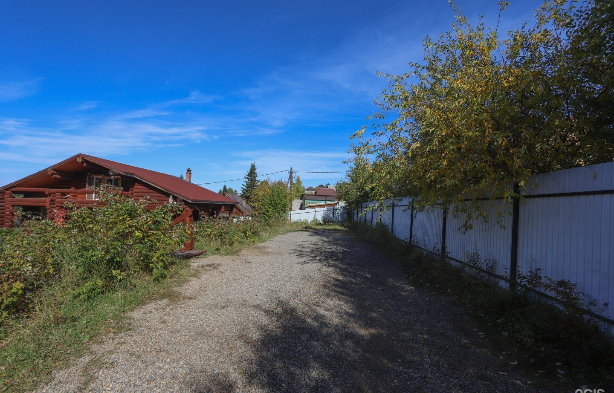
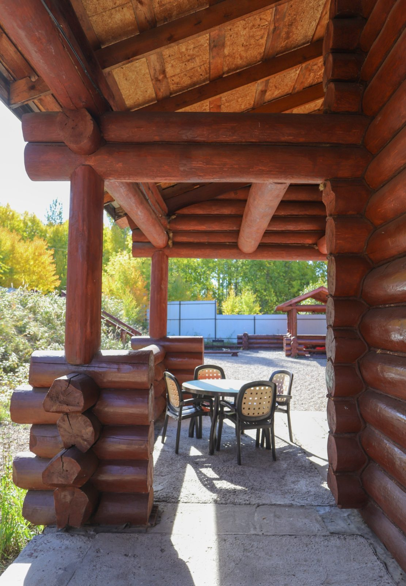

Иркутск, СНТ Станкостроитель, 108 — в черте города, 15–25 минут от центра. На связи каждый день с 9:00 до 22:00.
Иркутск, 664521
Ежедневно с 09:00 до 22:00

Напишите в WhatsApp или MAX дату, повод и число гостей — хозяйка подтвердит и назовёт стоимость.
Постройте маршрут по точке в Яндекс Картах или 2ГИС. Парковка — во дворе дома.
Остановка «СНТ Бирюсинка» — в 250 метрах, около 3 минут пешком.
Если гостям нужно помочь с дорогой, спросите хозяйку про трансфер.